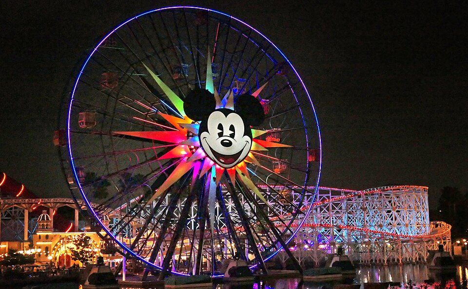
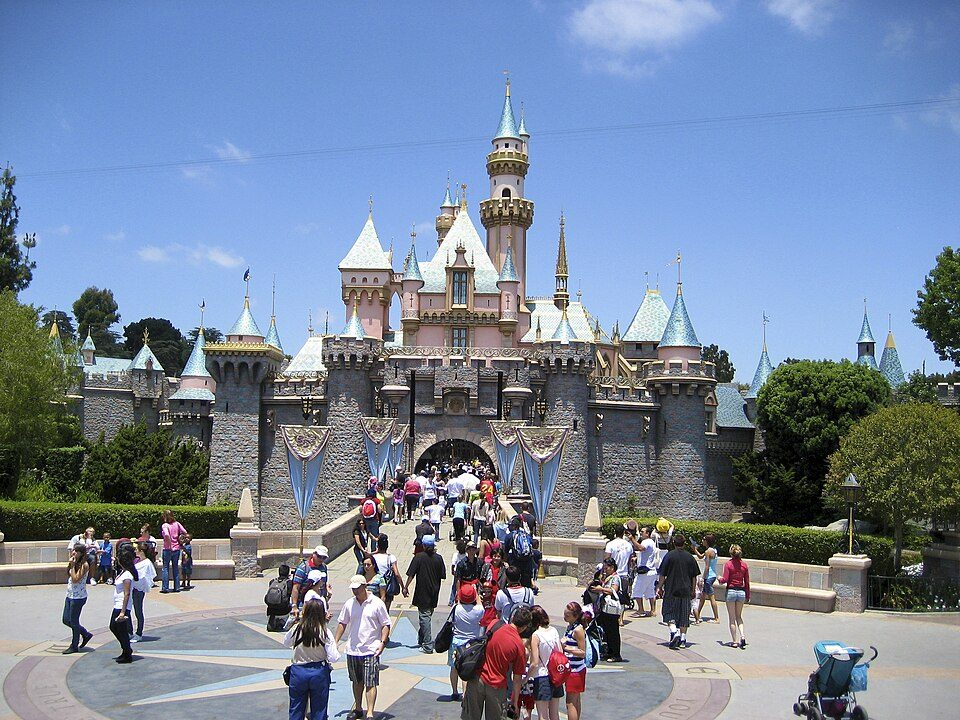
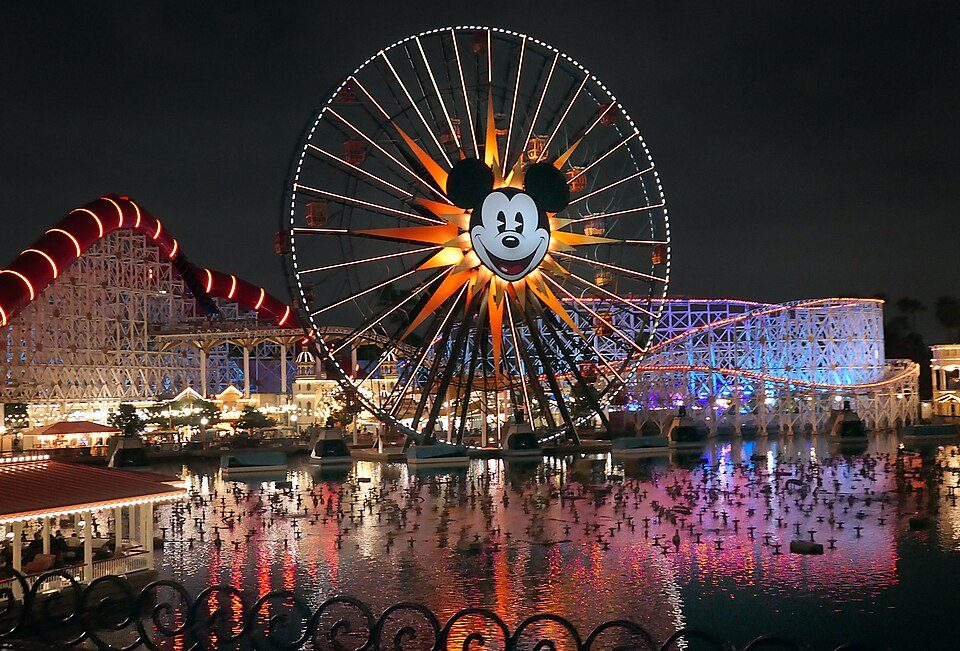

Disneyland Califórnia: Como Funciona o Ingresso e a Reserva

Quem conhece os parques de Orlando costuma estranhar a Disneyland da Califórnia na primeira vez. O resort é menor, os dois parques ficam lado a lado e, principalmente, a data da visita pesa muito mais: além do ingresso, é preciso ter uma reserva de parque confirmada. Entender isso antes de comprar evita dor de cabeça no dia.
Os dois parques da Disneyland Resort
A Disneyland Resort, em Anaheim, tem dois parques temáticos vizinhos:
- Disneyland Park: o parque original, com o castelo da Bela Adormecida, a Main Street e as atrações clássicas.
- Disney California Adventure: inspirado na Califórnia, com a área da Pixar, a roda-gigante do Mickey e a Avengers Campus.
Por serem bem menores que os quatro parques de Orlando, muita gente consegue fazer os dois em dias seguidos, ou até no mesmo dia com o Park Hopper.

Ingresso e reserva: são duas coisas diferentes
Este é o ponto mais importante. Para entrar em um parque, cada visitante a partir de 3 anos precisa ter o ingresso e também uma reserva de parque, para o mesmo parque e a mesma data. O ingresso sozinho não garante a entrada, e sem reserva confirmada não é possível entrar no parque.
- As reservas são limitadas por dia, e a Disney controla quantas vagas libera.
- Estar hospedado em um hotel da Disney não garante a reserva do parque.
- Nos ingressos comprados com agência, a reserva é feita em StartYourDisneylandExperience.com, depois de comprar o ingresso.
Como conferir a lotação da data
A Disney mantém um calendário de disponibilidade de reservas. Ele mostra, dia a dia, se ainda há vaga. A legenda funciona assim:
- Qualquer um dos parques disponível: a data tem vaga nos dois, e você escolhe por qual começar.
- Disneyland Park disponível como parque inicial: só dá para começar o dia pelo Disneyland Park.
- Disney California Adventure disponível como parque inicial: só dá para começar pelo California Adventure.
- Sem reservas disponíveis: a data está esgotada, e é preciso escolher outro dia.
O caminho mais seguro é conferir a data no calendário antes de comprar o ingresso, e não depois.
Tipos de ingresso: 1 parque por dia ou Park Hopper
- 1 parque por dia: você entra em um único parque no dia escolhido, o Disneyland Park ou o Disney California Adventure.
- Park Hopper: permite visitar os dois parques no mesmo dia. A reserva também é obrigatória: você escolhe o parque inicial e, depois, a entrada no segundo depende da lotação dele naquele momento.
O preço varia conforme a data: dias de semana fora de temporada costumam ser mais baratos, e fins de semana e feriados custam mais. Aqui na Encanty, o ingresso de 1 dia com 1 parque sai a partir de US$ 257,56 e o de 1 dia com Park Hopper a partir de US$ 363,94. O valor final depende da data escolhida e é confirmado pelo WhatsApp.

Filas pagas: Lightning Lane
Assim como em Orlando, existe um passe pago para reduzir filas, o Lightning Lane Multi Pass. Ele é um adicional que exige ingresso e reserva, e o valor, que começa em cerca de US$ 35 por pessoa por dia, pode mudar conforme a data. Com ingresso de 1 parque, o passe vale apenas no parque visitado naquele dia. Para usar nos dois, é preciso ter o Park Hopper.
Dicas para a primeira visita
- Defina a data primeiro: ela determina o preço e a disponibilidade da reserva.
- Confira o calendário de disponibilidade antes de fechar o ingresso.
- Faça a reserva do parque assim que comprar, porque as datas mais procuradas esgotam.
- Com poucos dias, considere 1 parque por dia, e use o Park Hopper se quiser ver os dois no mesmo dia.
- Chegue cedo: o dia rende mais antes das filas crescerem.
Datas, valores, regras de reserva e condições dos ingressos podem mudar sem aviso prévio. Confirme as informações atualizadas antes de comprar.
Quer ingressos para a Disneyland na Califórnia? Fale com a gente informando a data da sua visita e conferimos os valores e a disponibilidade.
Falar no WhatsApp